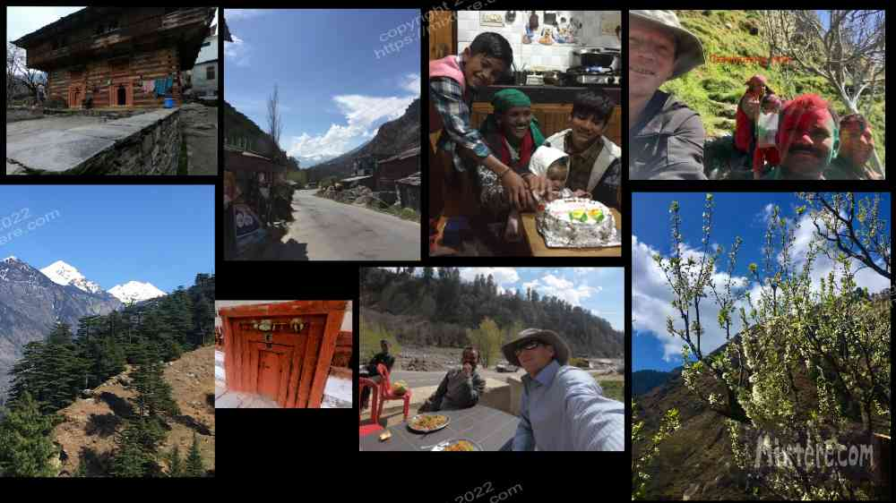

I headed for Kalath, a village outside of Manali in Himachal Pradesh. The destination was a family-run guesthouse among apple and fruit orchards that the Hungarian had suggested. With India starting to heat up. I needed a place to chill- literally. To get there I made my way via train from Agra. Soon I found myself in my not so favorite city, riding in a taxi to the “bus station.” This turned out to be little more than a one lane road along a flea market of sorts. Typically, I had not had anything proper to eat that day and grabbed an egg sandwich, some fruit, cookies and tea from a street vendor. There were conflicting reports regarding when the bus would depart. I was beat and it didn’t dawn on me what was going on, that the bus was waiting until it was full before leaving. This turned out to be about two or three hours of twiddling our thumbs among the squalor of the flea market.
Finally the bus departed. It was a regular coach with relining seats, not the carnie sleeper arrangement I had taken through Gujarat. My body was happy about this as it never did manage to fit in the sleeper compartment. Soon the bus was under way, accompanied by a not so seam-splitting Hindi comedy film. I did my best to ignore it and the blasting soundtrack. We stopped at a roadside restaurant about midnight. I staggered out with the rest of the passengers and ordered some over-priced lentils and rice. Then we all filed in and the bus continued.
These sorts of bus journeys, ones that wind through mountainous roads without fresh air, can be nauseating for me. I opted not to look out the window too much. I did catch a couple of glimpses of foothills as I could feel the bus starting to climb out of the plains. I must have nodded off in my seat. When I came to at about four in the morning the bus was criss-crossing switchbacks of a mountain road. The air in the bus was cool. Remnants of sooted snow lingered on the side of the wet road. Moisture from the fog and snowmelt was a welcome change from the dry, sooty air of the plains . So was the cool air and the sight of mountain passes.
I nodded off again for another hour or so. I awoke to higher heights and clearer sights. The mist and fog of the morning had dissipated. By late-morning we were following a river in clear alpine sunlight. The bus barreled through blind corners and used its horn liberally. In some places overhangs of rock arced over the top of the bus like granite waves, a dangerous drop into the river waiting on the right. Our bus or oncoming traffic would pull to the side at the last minute, leaving just enough space to permit passage. This is a good thing as the river was flowing quite strongly with the snowmelt of the early spring.
Without much notice the bus dumped me on the side of the highway about 8 kilometers from Manali. This was to be my meeting point for the guesthouse owner. I awkwardly stood there with my packs as traffic blasted past. Soon a man in a Volkswagen gulf pulled up and ushered me into the vehicle. We crossed the highway and then crossed in the car what I swore had been a footbridge. Torrents of alpine water rushed underneath us. I preyed that the bridge would hold. Fortunately it did and we turned onto an especially rough road of large cobbles set in mud. The poor Volkswagen took a beating getting us through that section and up onto higher, paved ground. And then we were there. The car pulled onto a carpark that was the top story of a four story guesthouse built into the hillside overlooking the river. All around were apple and stone-fruit trees blossoming in the spring sunshine. I extricated myself from the vehicle and took in the fresh air. The vistas around were stunning, the sound of the wind and rushing river echoing through the gorge. On both sides of us steep rock ridges to a succession of peaks and valleys in all directions. It was quiet and peaceful. I breathed and took it all in, then grabbed my packs.
The proprietor led me into his guesthouse. It looked to be recently finished and had freshly finished blond wood all around. My room was on the third story. It had a decent bed, its own bathroom and windows overlooking the mountain valley. This was not an inexpensive stay but I received a discount for staying month. Prices at this higher altitude were also high but it was worth it.

My little stay at this orchard property in the mountains was a relaxing one. The air and water was clean and the views were always spectacular. The family that ran the place, especially one of the brothers, Panalal, took me into their fold. They fed me each day. I got to know them all a little bit, within the confines of simplified English. I got to know the brother’s two sons a bit and taught them how to play chess. We built a chess board from pieces I designed on paper. It took a while for them to learn what each pieces moves were. But in a few days the two of them were beating me at the game! It was unnerving.
I especially bonded with Panalal, who's focus was overseeing the apple, pear and plum orchards. We shared a love for farming and plants. He took me up the steep hillsides to visit his orchards and generally acted as my guide around the area. Each day he would check on me, usually bringing tea, and ask what the plan for the day was. Usually I responded that there was not a plan. He offered his chopper style motorcycle. Although I hold a motorcycle license I was not inclined to hop on it. I had seen too many dicey maneuvers on the way up. Besides, stress and seeking excitement was behind me. I was now in a resting period of my travels. I walked to the little town to buy essentials but did not venture too far from the family compound along the river.
On all our minds was the growing specter of COVID. Cases had started to pop up in Kerala a few month earlier. The number of cases reported there had continued to grow as I had traveled north to Gokarna, Ahmedabhad, Palitana, and so on. That March in Himachal Pradesh things were growing more tense by the day. I was among mountain people with minimal education that lived in an insular community. The results of my searches for COVID news on the internet regularly contrasted with the conclusions of the Soni cottage clan. At that time a great focus in the news were tactics of wearing masks and avoiding mixing to close with the public. The family members continued to go out and about unmasked, insisting that there were no COVID cases in Himachal. There is geothermal activity around Manali and one day Panalal took me to the local hot spring bathhouse. Conditions there were close. The proximity of bathers to each other and the hot steam emitting from the baths seemed to me a good way of facilitating spread of the disease. Additionally being in the same water that people were soaping up and shampooing in felt gross. Although Panalal went back a few times that month, but I didn't.
One day we drove up into the mountains to the “ski resort.” It was still only early spring and temperatures were cool enough to prevent the snow from melting. The “resort” consisted of a large muddy parking lot with a tram that took visitors up the mountain. Most people were just walking a bit up the slushy slopes, slipping in their shoes and shivering in their street clothes. We joined them for an attempt at walking up the mountain. Having spent a good deal of time in the Sierras and the Rockies, I noted the almost complete absence of mountain sport equipment or clothing. There were a few people with skis that were struggling up or down the mountain. Others had sleds or saucers and took these a few hundred feet up the slope to come squirting down again. It seemed a shame to me that people were not able to utilize the Himalayas with proper clothing or equipment, or much knowledge about how these things might be used. But it has been the same case in Kovalam, with most people unable to swim, fearing the ocean and very little equipment on hand to enjoy it with. All this said it was nice to be up in the snow with the trees and the bright alpine sunlight.
Trips into Manali to shop for essentials did not enamor me of the town. It had a crudeness to it, one bred of so many tourist establishments and shops with little character or heart remaining. I preferred the quiet of the guesthouse complex among the apple trees and tended to linger there for my time in Himachal.
With my six month visa about to run out, concerns about COVID and where a safe place to travel next might be were all consuming worries for me. I grew more and more tense and sort of paralyzed with indecision. The evenings in the kitchen grew relatively quiet with worry. We all sat around the wood stove in the center and looked at our phones. I was looking for news. The men were busy viewing entertaining videos to pass the time. It did not seem that the family shared my concerns about the growing threat of the virus. Real information, if that can even be found these days, was impossible to come by. World governments, even the World Health Organization were not disclosing the truth about what was going on. The Center for Disease Control actually said not to wear masks. This turned out to be a tactic to prevent a shortage of masks to first-responders. I think they have yet to regain the public's confidence.
It was clear that the powers that be were trying to prevent panic among their citizens. At that time the belief in Himachal was that any sort of proximity to the Chinese meant an increased chance of catching the virus. So my plan to make a visa run to nearby Nepal, a place apparently inundated with Chinese, seemed to my host family to be a bad idea. The truth was that the only thing that was certain at that time was uncertainty. And a lot of fear. The tension grew with each day without any option seeming to be a good one.
One day the superintendent of police and a deputy suddenly came to visit me at the guesthouse. There was a knock on my door and I was informed that I needed to go speak with them. This was alarming. I tried to stay calm as I went down to sit with him and his associate over tea. They were very calm and civil. By that time Indians were starting to understand that mixing with the public during the spread of a pandemic was a bad idea. The officers asked me how my health was, where I had come from and where I had gone in the last week or so. Thankfully I had not really gone anywhere. I gladly shared this news with them. They seemed satisfied with this and encouraged me not to go out and mix with the public. They took down my information and bade me a pleasant farewell.
That visit increased my anxiety. I continued to look for an exit strategy out of India. I could not find a good option as the whole world was unravelling. I think all that are reading this can relate to the fear that was spreading at that time. Now imagine that instead of being nestled safely at home you are far abroad in a remote location on your own with no one with a global eduction or sensibility to talk with. That was my situation in Kalath.
A few evenings later the proprietor of the guesthouse promptly informed me that I needed to leave the next morning. Probably due to Xenophobia, all foreigners were being expelled from Himachal Pradesh. The superintendent of police had informed the owner that the last bus of foreigners had left the previous day. At great expense I was to take a private taxi to Delhi. Both the proprietor and I had very misguided notions of what the US embassy and its staff in Delhi could do for me. The proprietor insisted that I "go to my people," that they would "take care of me." Most of my efforts to contact the embassy led to curt emails and automated phone recordings that urged people to physically stay away from the embassy.
I kept being told that due to the "unprecedented" series of events, they were unable to be of direct assistance. Unprecedented my ass! When I did reach someone on the phone he urged me to find a hotel and stay there. I was not to arrive at the embassy and there was little they could do for me. So again I was struggling with the disconnect between my understanding of the situation and that of my hosts. And as always, little accurate information was available on the internet. Governing powers were doing everything they could to minimize public panic and downplay the situation.
The next morning I paid $200 for a private taxi headed for Delhi. This was a traveling, haggling nightmare on steroids. After paying for the whole trip, I got in the car only to have the driver ask for more money. I refused. A few hours down the road a fresh driver took the old one's place and the game started again. I fought those people's schemes the whole way to Delhi. En route I made a booking at a budget hotel near the airport. The car dropped me off there and, exhausted, I checked in.